30 km nördlich von Kuching liegt der Bako Nationalpark auf einer Halbinsel im Meer. Wir sind nur ein paar Meter von unserem Hostel in den Rapid Kuching Bus 1 gesprungen und haben uns ein Stündchen durchs Umland karren lassen. Die Straßen sind extra breit und so gepflegt, dass sie in Kalifornien sein könnten. Die Bebauung hat aber eher einen chinesischen Touch und sieht ziemlich trist aus. Überall sind Fabriken hochgezogen worden und drum herum gleich die passenden Behausungen für die Angestellten. König Krupp wäre begeistert.
In Bako Bazar gibt es nicht viel mehr als ein paar Häuser und die Anlegestelle der Boote in den Park. Der Zugang über Land ist in Ermangelung einer Straße nicht möglich, was dem Park aber sicher ganz gut tut. Die 20-minütige Fahrt führt vorbei an Sandbänken, auf denen Fischer ihren Job auch ohne Boot machen können, entlang der Küste der knallgrünen, kleinen Welt, die hier behütet wird. Am Ufer zeigen sich schroffe Felsen mit einer hübschen Haube aus Dschungel.
Rund um das Headquarter liegen die Gästezimmer in spartanischem Nationalpark-Design verstreut. Alle Gebäude sind mit Plankenwegen auf Stelzen verbunden. Die Wege führen in den Wald hinein, wo man ein paar schöne Stunden wandern kann. In der großen Bucht führt der Weg zuerst durch einen kleinen Mangroven-Wald, der morgens trocken liegt und abends überflutet wird. Danach schraubt man sich über Treppen aus Wurzeln auf das Hochplateau der Insel. Kaum ist man zwei Schritte in den Wald gegangen, wird man von Grün und dem Lärm der Käfer und Zikaden eingehüllt. In Bako gibt es mehrere Landschaftsformen, so dass man hier immer wieder durch kleine Placken Heide läuft. Statt Gräser und Erika wachsen hier insektenfressende Kannenpflanzen und Farnbäume. Über steile Treppen gelangt man in die kleinen Bucht Pendan Kecil zu einem weißen Sandstrand. Nach dem schweißtreibenden Marsch war das Meer zu verlockend, aber leider nicht zu erfrischend! Das Wasser ist zu warm, falls so eine Beschwerde überhaupt erlaubt ist. Glücklicherweise haben wir erst nachher erfahren, dass das Schwimmen wegen Quallen und eines Krokodils, das hier angeblich gesichtet wurde, verboten ist. Das hätte uns das Badevergnügen sicher verdorben.
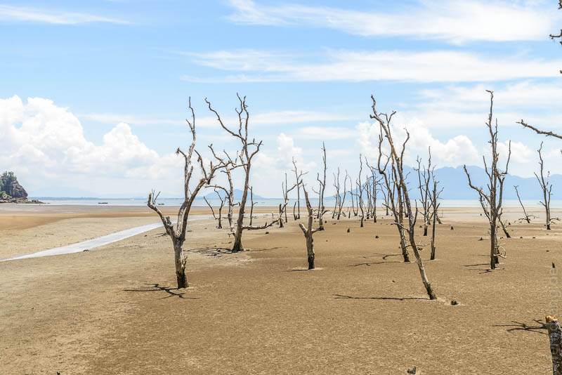
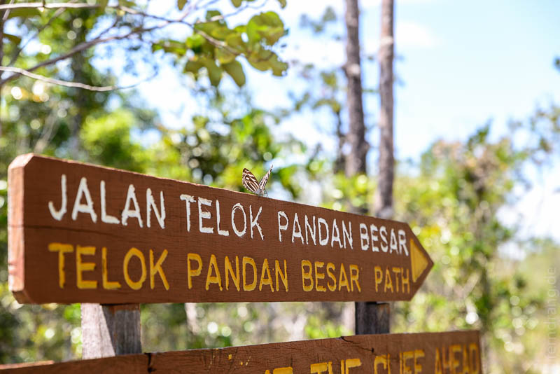
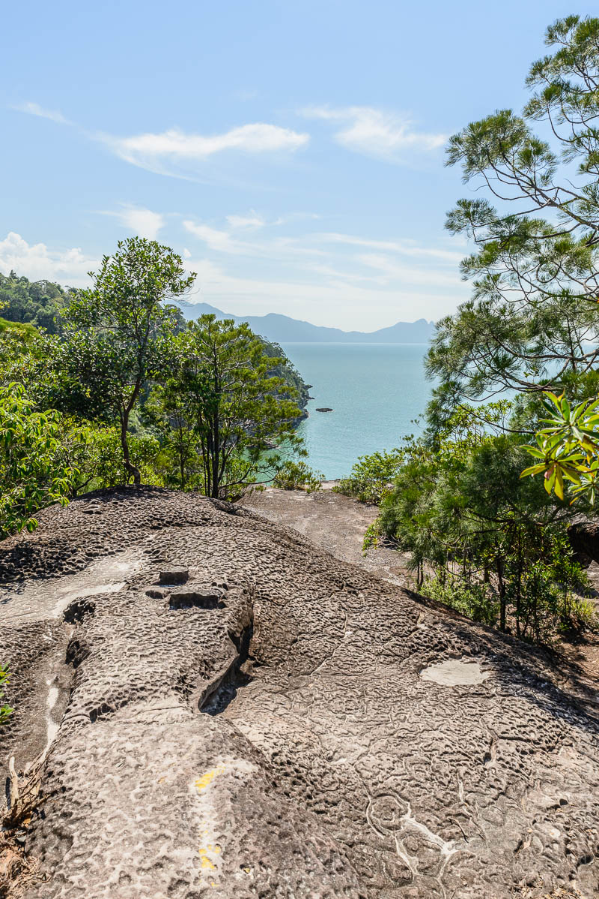
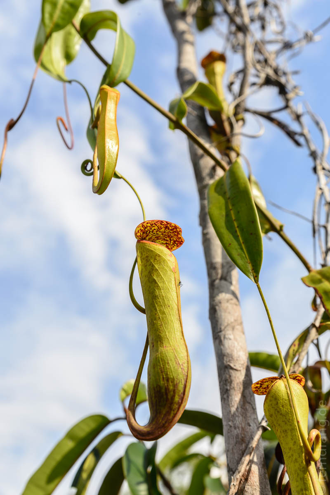
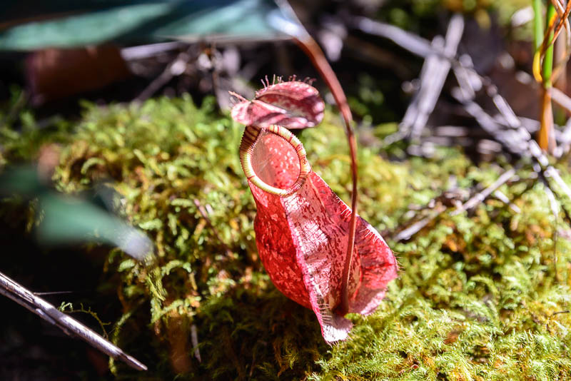
Nach dem Abendessen in der Kantine werden Nachtwanderungen angeboten. Der Weg geht nur über die flachen Planken, so dass man sich nicht den Hals bricht. Mit Taschenlampe sind wir im Gänsemarsch durch die Dunkelheit gegangen. In der Dämmerung dröhnt der Dschungel in voller Lautstärke und alles ist auf den sechs oder acht Beinen um zu fressen oder gefressen zu werden. Daher ist ein funktionierendes Mückenspray ein äußerst lohnenswertes Reiseutensil. Der Führer hatte entweder den siebten Sinn oder eine Tasche voll Viecher, die er heimlich auf Blätter gesetzt hat. Zumindest hat er alle paar Meter etwas im Kegel seiner Lampe entdeckt, so dass wir eine große Freakshow hatten: Stachelige Tausendfüßler, Stabheuschrecken, rote Spinnen, grüne Schlangen...
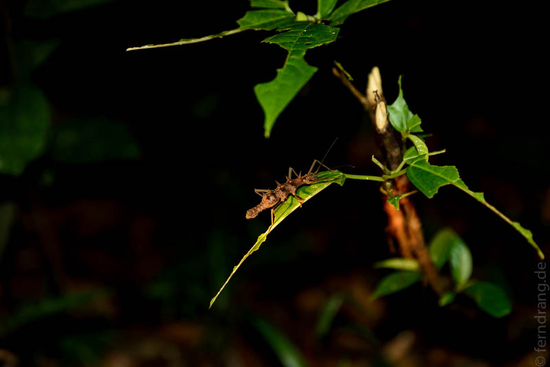
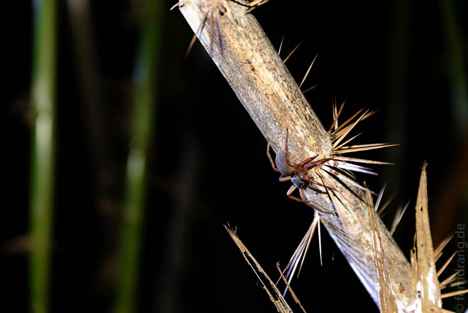
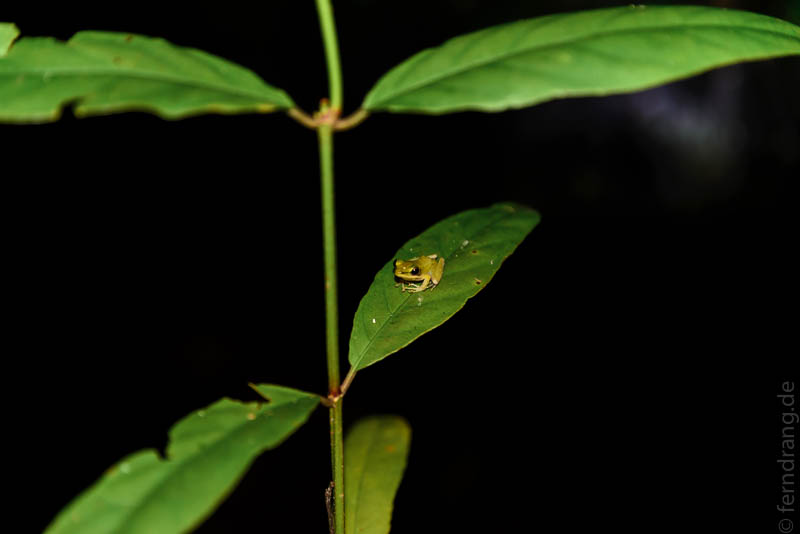
Am nächsten Morgen wurde mir meine außerstädtische Überlebensfähigkeit abgesprochen, als ein frecher Affe mein Frühstück geklaut hat. Danach ging es aber bergauf – zumindest die Wanderung. Im HQ bekommt man eine Karte des Areals ausgehändigt, auf der alle Wege eingezeichnet sind. Das nette Mädchen an der Rezeption hat uns hilfreich erst alle geschlossenen und dann alle gangbaren Wege gelb markiert. So ausgerüstet haben wir uns auf den Rundwanderweg gemacht, der gut ausgeschildert durch abwechslungsreiche Landschaften führt. Kurz vor Schluss ist Ali umgeknickt und hat einen besorgniserregenden Ton in ihrer Knöchelgegend erzeugt.
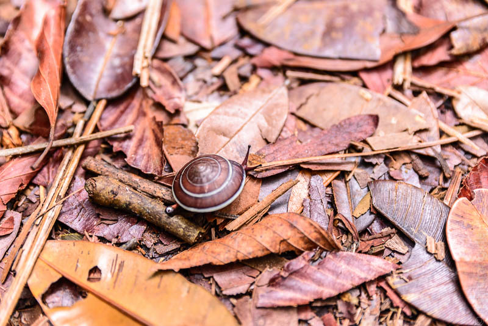
Weil die längeren Wege in entlegenere Bereiche gesperrt waren, sind wir zum Mittagessen wieder in der Kantine gelandet. Später haben wir versucht Alis Schwellung mit einer weiteren Wanderung zu behandeln. Mit dem Boot haben wir uns an einem Strand im Norden der Halbinsel absetzen lassen, wo wir wie die ersten Menschen in einer einsamen Bucht an Land gegangen sind. Von dort aus führt der vielleicht schönste (offene) Weg hoch und nieder über Stock und Stein zurück zum Rundweg, den wir mittlerweile im Schlaf gehen könnten. Der Knöchel hat auf die Behandlung nicht so gut angesprochen, so dass wir uns angesichts der fiesen Schwellung Sorgen um unseren geplanten Trip zu den Pinnacles gemacht haben.
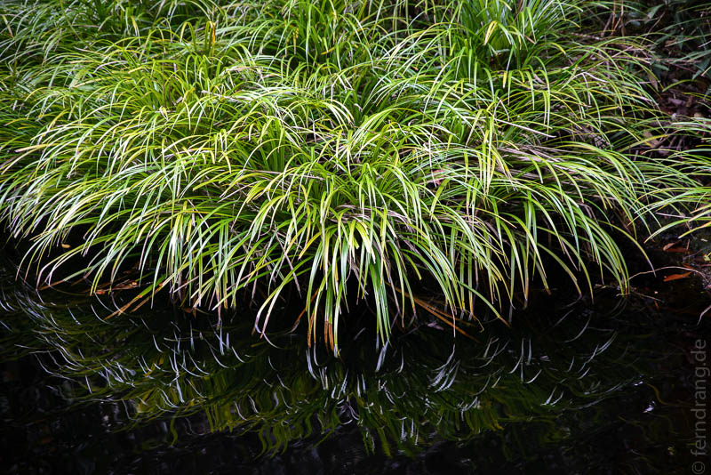
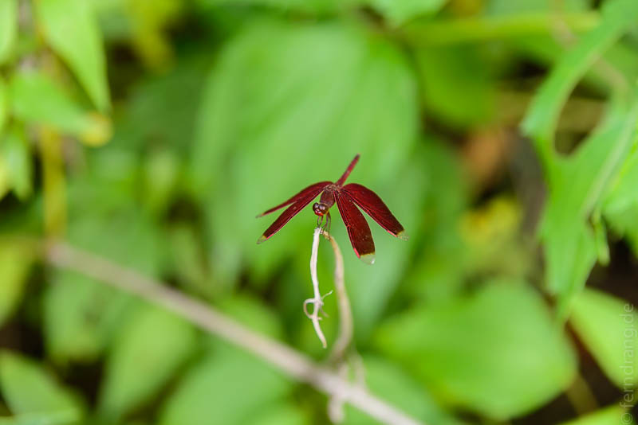
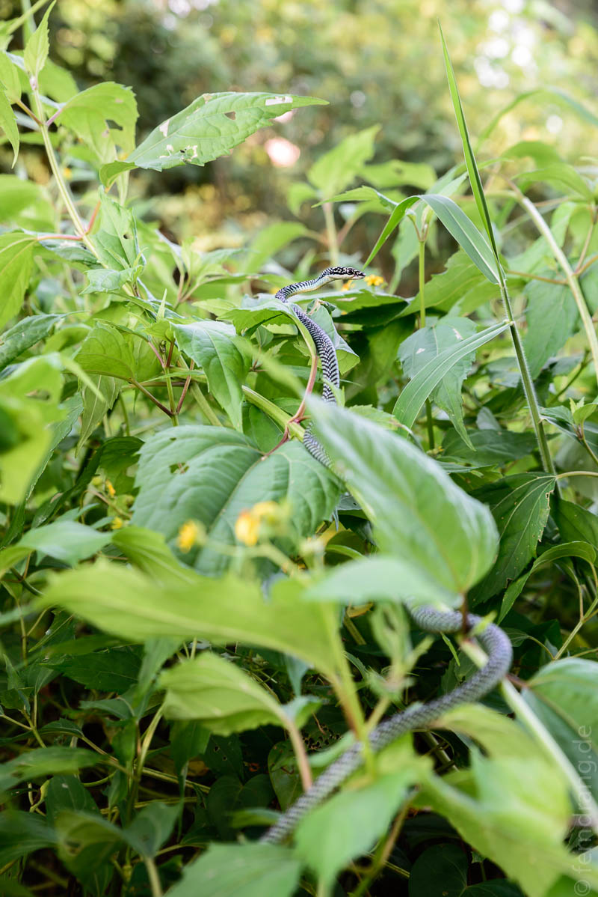
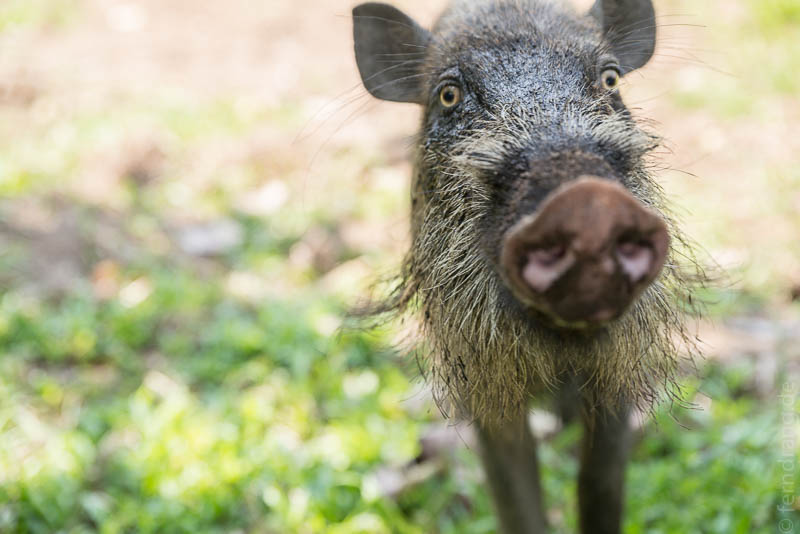